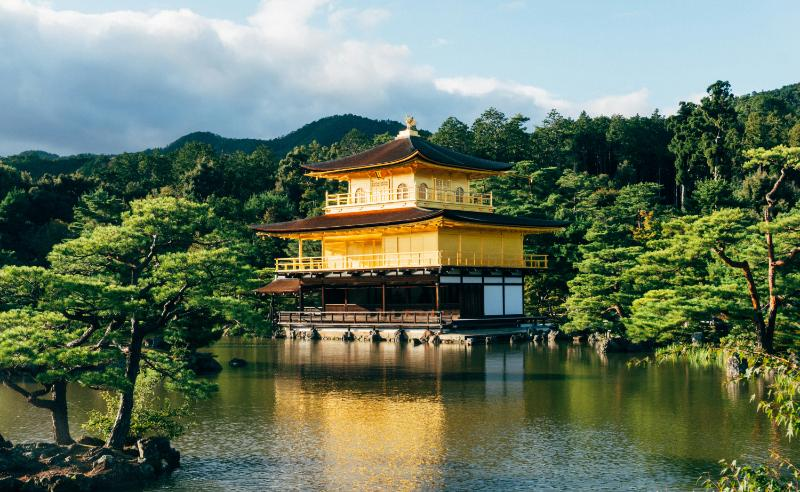
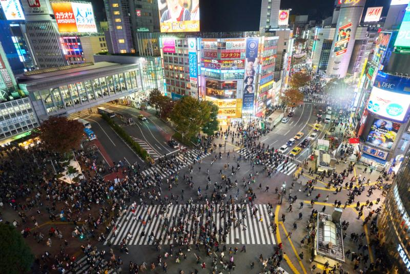
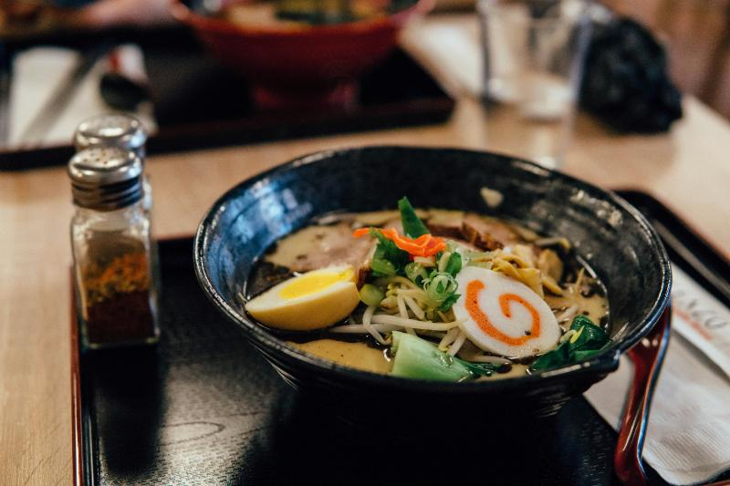

Kyoto: Jantung Tradisi Jepang

Kyoto, ibu kota kuno Jepang, adalah tempat di mana sejarah dan tradisi masih hidup dan bernafas. Kota ini adalah rumah bagi ribuan kuil Buddha dan kuil Shinto. Anda bisa menghabiskan berhari-hari menjelajahi keindahan arsitektur tradisional, taman zen yang menenangkan, dan hutan bambu yang ikonik. Nikmati teh hijau matcha di upacara minum teh tradisional atau saksikan geisha berjalan-jalan di distrik Gion saat senja. Pengalaman di Kyoto adalah jendela ke masa lalu yang magis.
Tokyo: Metamorfosis Modern

Sebagai kontras dari Kyoto, Tokyo adalah simbol modernitas dan inovasi Jepang. Dari persimpangan Shibuya yang sibuk, yang merupakan persimpangan pejalan kaki tersibuk di dunia, hingga gedung pencakar langit megah di Shinjuku, Tokyo adalah kota yang tidak pernah tidur. Jelajahi distrik perbelanjaan Harajuku yang penuh warna, kunjungi pasar ikan Tsukiji yang legendaris, atau nikmati pemandangan kota dari Tokyo Skytree. Tokyo menawarkan pengalaman urban yang tak tertandingi dengan sentuhan budaya pop yang unik.
Surga Kuliner: Lebih dari Sekadar Sushi

Kuliner Jepang, atau 'washoku', telah diakui oleh UNESCO sebagai Warisan Budaya Takbenda. Tentu saja ada sushi dan sashimi yang segar, tetapi kekayaan kuliner Jepang jauh melampaui itu. Cicipi ramen yang gurih, udon yang kenyal, tempura yang renyah, atau okonomiyaki yang lezat. Jangan lupakan juga hidangan penutup manis seperti mochi dan dorayaki. Setiap daerah di Jepang memiliki spesialisasi kuliner sendiri, menjadikan setiap perjalanan sebagai petualangan rasa yang tak terlupakan.